Da un'idea


Elementi d'arredo, nessuno escluso
Dagli arredi ‘da appoggio’ alle boiserie, fino agli elementi fissi e integrati: realizziamo i componenti che definiscono un interno, coordinandoli in un unico flusso di lavoro sotto la nostra responsabilità.


Acquisiamo concept e specifiche tecniche per definire con precisione gli obiettivi e la complessità di ogni realizzazione.
Misuriamo accuratamente lo spazio fisico per generarne una restituzione grafica in scala millimetrica. Acquisendo dati precisi in loco, eliminiamo ogni margine d’errore, colmando il divario tra l’intento progettuale e i disegni esecutivi. Questo ci permette di identificare proattivamente rischi strutturali o spaziali prima ancora che il progetto arrivi in produzione.
Realizziamo disegni costruttivi (shop drawings) ad alta precisione per la produzione di ogni elemento su misura. Traducendo il concept in dati tecnici per la manifattura, garantiamo che ogni pezzo bespoke si integri perfettamente nei vincoli fisici dello spazio, mantenendo i più elevati standard di maestria artigianale.
Identifichiamo e selezioniamo i partner produttivi più idonei per ogni specifico progetto, assicurandoci che la loro maestria artigianale sia in linea con i nostri standard qualitativi. Garantiamo una supervisione costante durante l'intero processo di fabbricazione, per assicurare che ogni elemento su misura sia realizzato fedelmente ai disegni costruttivi approvati e nei tempi prestabiliti.
Ci occupiamo dell’intero processo di ricerca, acquisto e gestione logistica di arredi, finiture e complementi (FF&E) necessari per dare vita al progetto. Il nostro servizio include la selezione dei fornitori, la negoziazione dei contratti, il monitoraggio della produzione e il coordinamento logistico, assicurando che ogni elemento rispetti gli standard di qualità, il budget e le tempistiche prestabilite. Questa fase cruciale è il ponte che trasforma l’intento progettuale in realtà tangibile.
Gestiamo l'intero ciclo di vita della logistica e del Project Management. Il nostro servizio include la selezione e il coordinamento di fornitori specializzati, l'ottimizzazione delle tempistiche di produzione e la supervisione dell'intera catena di fornitura: dallo stoccaggio sicuro in magazzino, alle spedizioni internazionali e lo sdoganamento, fino allo e alla consegna finale in cantiere.
Ci occupiamo di un controllo qualità integrale e la supervisione costante del montaggio in cantiere. Dal ricevimento della merce e la gestione delle eventuali pratiche di danno da trasporto, fino alla direzione del fit-out finale: ci assicuriamo che ogni elemento su misura sia installato alla perfezione e rispetti i nostri rigorosi standard qualitativi prima della consegna finale.
Monitoriamo meticolosamente ogni acquisto rispetto al budget stanziato e gestiamo i tempi di consegna di tutti i fornitori. In questo modo, garantiamo che il progetto sia consegnato nei tempi previsti e nel rispetto dei parametri finanziari, prevenendo costosi sforamenti di budget o ritardi nelle tempistiche.
ANALISI DEL PROGETTO
RILIEVO TECNICO
SVILUPPO TECNICO ED ESECUTIVO
COORDINAMENTO E PRODUZIONE
PROCUREMENT
MAGAZZINO E LOGISTICA
INSTALLAZIONE
HAndover

Ottimizziamo e realizziamo progetti d'arredo "chiavi in mano" che fondono artigianalità e precisione. Il nostro team riunisce artigiani di fiducia e maestranze d'eccellenza per garantire che ogni dettaglio sia curato con dedizione, dal concept alla consegna finale. Con noi, ogni complessità si trasforma in una garanzia di qualità, affidabilità e design senza tempo.
Contesti diversi, stesso standard
RESIDENZIALE

COMMERCIALE

NAUTICA